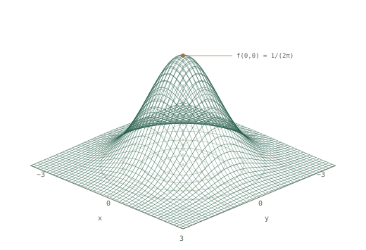

Quantitative finance & analytics
Hassan Ahmed
I build reliable models, validate them carefully, and turn results into clear reports and tools.
Python R SQL C++

About
I’m an MSc Financial Mathematics graduate with a focus on quantitative finance. My work spans derivatives, time series, portfolio construction, actuarial risk and commercial analysis, with an emphasis on validation, diagnostics and clear reporting.
What I’m looking for
Quantitative finance, investment analytics, ALM, pricing, actuarial/risk and data analytics roles where I can build models and communicate them clearly.
What I’m good at
Connecting clean data, mathematical modelling, robust testing and clear reporting. I care about assumptions, diagnostics and explainability.
Core tools
Python, R, SQL and C++. LaTeX for technical reports, with work documented through research reports, code and analytical outputs.
Selected projects
08 projects / Reports + code
Quantitative Finance Research
Volatility, portfolio optimisation, derivatives and market risk.
-
01 / Python · MSc research
Rough Volatility Estimation (MSc)
Implemented roughness and Hurst estimators; validated behaviour through Monte Carlo simulation and intraday volatility experiments.
-
02 / Python · Portfolio construction
CAPM-Informed Mean–Variance Portfolio Optimisation
Built a sector ETF strategy using rolling CAPM betas, Ledoit–Wolf covariance shrinkage, constrained Markowitz optimisation, walk-forward backtesting, VaR/ES and sensitivity analysis.
-
03 / R · Time series
Volatility Forecasting & Risk Signal Analysis
Forecasted log-VIX using ARIMA and AIC-selected regression models; evaluated rolling one-day-ahead forecasts and classified volatility regimes using rolling thresholds.
-
04 / C++ · Derivatives
Derivatives Pricing & Greeks Engine
Built an options pricing workflow with Monte Carlo and finite-difference methods, Greeks, hedge-ratio analysis and validation checks.
Finance, Risk & Analytics
Liability valuation, reserving, forecasting and commercial insight.
-
05 / Python · Actuarial valuation
Annuity Liability Valuation & Sensitivity
Modelled survival-weighted annuity cashflows using HMD UK period life tables and a Bank of England nominal gilt spot curve, with rate, longevity, mortality, inflation and expense sensitivities.
-
06 / R · Claims reserving
General Insurance Reserving & Claims Triangle Analysis
Analysed paid and incurred claims triangles using Chain Ladder and Bornhuetter–Ferguson methods, with reserve estimates, diagnostics and uncertainty checks.
-
07 / R · Forecasting & diagnostics
KPI Forecasting & Monitoring Diagnostics
Built ARIMA and AIC-selected regression models for synthetic insurance and operational KPIs, with rolling forecast evaluation, Ljung–Box residual checks, KPI movement monitoring and anomaly alerts.
-
08 / Python / SQL · Commercial analysis
Commercial Analysis & Strategic Insight
Analysed 7,032 IBM Telco customers using Python and SQL; identified churn concentrations by contract, tenure, payment method and charge band, then built logistic regression risk bands to support retention prioritisation.
Get in touch
Open to opportunities in quantitative finance, risk, actuarial analytics and data/finance analytics. I’d be happy to discuss my work and where I could contribute.